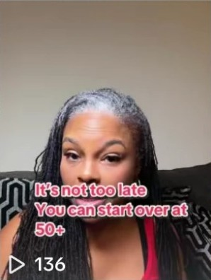
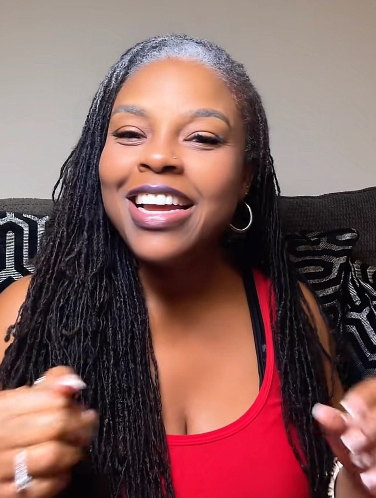
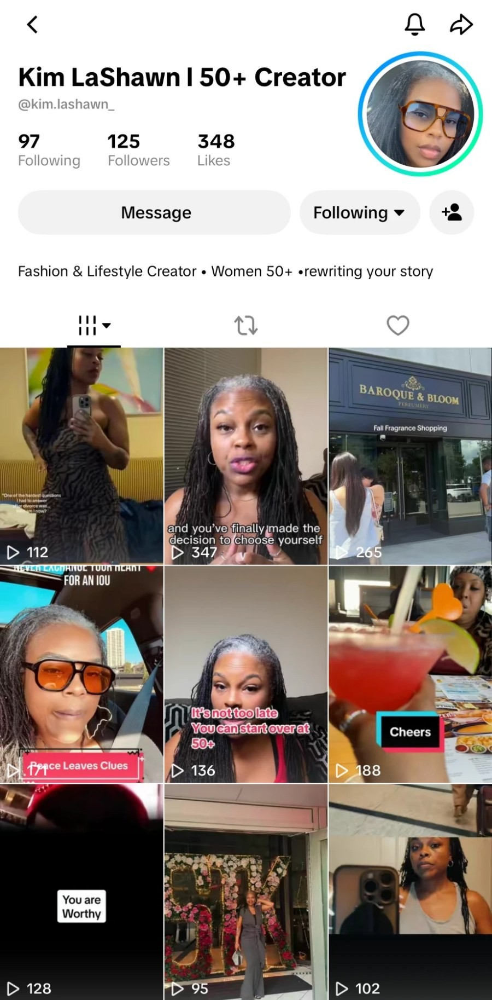
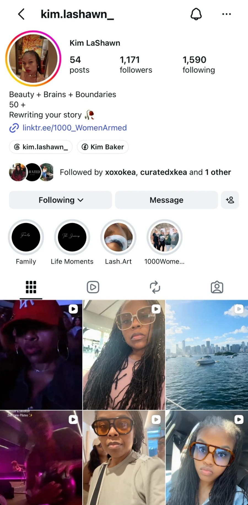
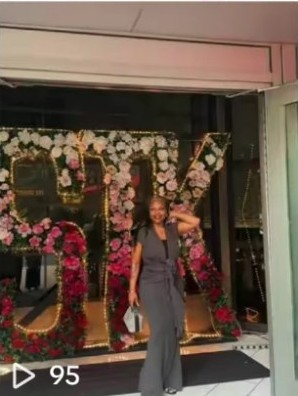
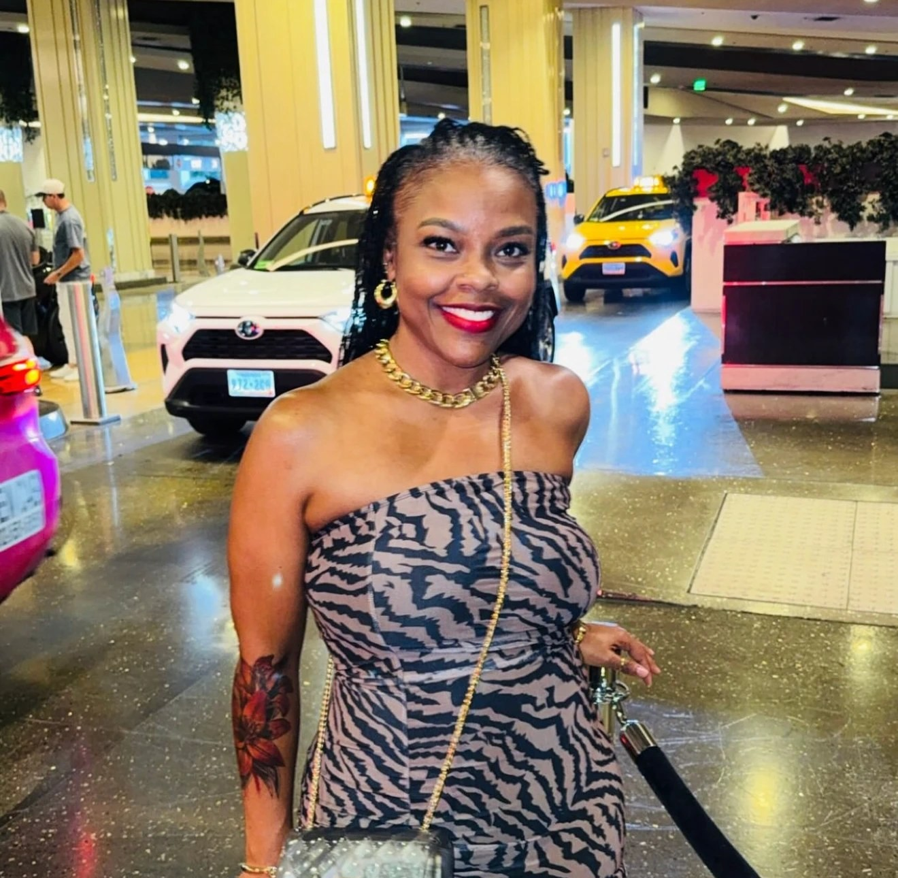

01
Becoming & Confidence
Give everyday experiences meaning through honest, encouraging conversation.
Lessons from this chapterChoosing yourselfPermission and new beginningsConfidence you can practice

Your first 30 days of content. A plan for building a life you love, with confidence, joy, and intention, and sharing it as you go.

Kim,
I’m proud of you for taking this first step. Choosing to show up on camera, consistently, in a new city, while working full-time, takes real courage. And you’ve already started.
This guide gives your first month some structure. More than that, it’s a repeatable system: four pillars you can come back to, each with subtopics underneath, a weekly rhythm that tells you what to film next, and a series that ties it all together. Whenever you’re not sure what to post, open this up and start from here.
Thank you for trusting me as your content coach. I’m grateful to be part of this chapter with you, and I can’t wait to see what you create.
Ready to film? Your month at a glance is on page 14, and every post is detailed from page 15. Tick the boxes as you go.
Building a life you love, with confidence, joy, and intention.
This is the idea every video comes back to.
Your everyday life in Houston, from Pilates and outings to family time and moments with your husband, is what people come to see.
Your motivational talks turn ordinary moments into something women can carry into their own lives.
Your clothes and your hair express your personality before you say a word.
Women’s safety education brings real professional knowledge, and another kind of confidence.
Your profiles already say what this plan is about. Now we give it a rhythm.


Your short-term growth goal, with the plan to apply for TikTok Shop creator access once your account is eligible. It’s a milestone to work toward, not a guarantee of approval, income, or a particular timeline. Consistency, your series, and your style posts are how you get there.
Black women 50+ who are navigating new chapters and discovering new ways to enjoy life, express themselves, stay active, build confidence, and care for themselves.
You don’t need to have it all figured out.
You’re sharing what you’re learning while you live it. That’s what makes you relatable: women can watch you try things, reflect, and grow, and see room for themselves in the story.
Your routines, outings, and style choices feel reachable, not staged.
Your talks offer a perspective they can use the same day.
You ask questions and answer comments, so it feels like a conversation.
A steady weekly rhythm makes you easy to come back to.
Your divorce and remarriage are part of your story, and they’re yours to share when they serve a message. The Rediscovering Her series on page 10 gives that story a home, without making every post about it.
Each pillar is a different way into the same message. The subtopics are your idea bank: when you don’t know what to film, pick a pillar, then a subtopic.

Give everyday experiences meaning through honest, encouraging conversation.
Invite women into the life you’re building in Houston.
Keep it personal. Share your own routines and experiences rather than medical or fitness advice.
Your style shows who you’re becoming. Your safety education shares what you know. They take turns on Fridays.

Let your clothes and your hair express who you’re becoming.
Introduce your expertise and make safety education feel approachable.
Becoming & Confidence
Lifestyle, with style moments
Style and Safety, alternating
Your outfits, accessories, and genuine finds show people your taste. Over time, they teach your audience what they can trust you to recommend.

A style moment takes a minute by the mirror or the door. It fits into your day; it doesn’t need its own production day.
Short on time? A photo carousel of the outfit or the find works for your optional Thursday post.
This series isn’t “watch me recover from divorce.” It’s “I’m rediscovering myself in a new chapter, and maybe you are too.”
That leaves room for reflection, fun, Houston, work-from-home days, beauty and style, and everyday life, without the series ever feeling heavy. Your first video on this is the pilot; everything else builds out from it.
“I knew who I was as a wife, but after my divorce, I realized I had to rediscover who I was as a woman.”
Then expand: “I don’t think you have to go through a divorce to understand that. Sometimes life changes and you realize you’ve spent so much time being somebody’s wife, mom, employee, caretaker, that you haven’t stopped to ask, ‘Who am I now? What do I actually like?’ So that’s what this season is for me. Rediscovering her.”
Maybe you’re rediscovering her too.
A Rediscovering Her thought or reflection.
Houston, trying something new, a solo date, an outing.
A WFH day, GRWM, weekend vlog, cooking, errands, a reset.
Not every post needs the series label. When someone finds you through a funny work-from-home video and visits your profile, they discover the bigger story: a grown woman building and enjoying her next chapter.
When you’re ready to share more about your marriage, the series grows naturally: “How do I stay connected to her while being a wife again?” Your brand evolves instead of having to pivot.
Establish the whole series.
“I knew who I was as a wife…”
In your plan · Week 1 · MondayRealizing some preferences were built around other people.
“Have you ever stopped and wondered… do I actually like this?”
In your plan · Week 3 · MondayYour move to Houston.
“Apparently part of rediscovering yourself is figuring out where you belong in a brand-new city.”
In your plan · Week 1 · WednesdayDoing something you’d normally wait for company to do.
“One thing I’m not doing in this chapter? Waiting for somebody to come with me.”
In your plan · Week 3 · WednesdayRevisit younger Kim.
“Before I was anybody’s wife, I was her.”
Build routines and favorite places.
Coffee, groceries, a restaurant, errands, home.
Style rediscovery.
“I don’t think I’ve figured out my style in this version of me yet.”
In your plan · Week 1 · FridayLighter, relatable everyday life.
“Working from home will have you looking up at 4 PM wondering if you’ve been outside.”
Boundaries and growth.
“There are things the old version of me tolerated that this version doesn’t.”
A new hobby or activity.
Let the activity carry the episode.
Being alone isn’t the same as loneliness.
In your plan · Week 3 · SaturdayBuilding community after moving.
“Nobody tells you how weird making friends as an adult can be.”
Holidays, weekends, Sundays.
“I’m realizing new chapters need new traditions.”
Personal reflection, not relationship advice.
“The biggest thing divorce taught me wasn’t actually about marriage…”
Values, habits, boundaries, joy.
In your plan · Week 4 · WednesdayGrowth isn’t “getting back” to who you were.
“Everybody talks about getting back to yourself. I don’t think I want to.”
You’re not trying to find the woman you were at 25. You’re meeting the woman you are now.
“People always say they want to get back to who they were before the marriage, before the kids, before life happened. But I don’t think I want to go backwards. That woman hadn’t lived what I’ve lived yet. I’m not trying to find the old me. I’m getting to know the woman I’ve become.”
“I’m rediscovering what I like, so today we’re trying…”
20 to 45 seconds with a little voiceover. People aren’t just hearing about rediscovery; they’re watching you do it.
No need to say “Episode 17” every time. Rotate these instead:
The last two matter most: you’re speaking with women, not at them.
Three posts a week is your baseline. A fourth and fifth are welcome when you have the material and the energy, and never required.
A motivational talk straight to camera, built around one idea from this chapter. Often a Rediscovering Her reflection.
A short look at something you’re already doing, with a reflection at the end. Weeks 2 and 4 include a quick style moment.
Personal style in weeks one and three. Women’s safety education in weeks two and four.
when you have it
An outfit, an accessory, or a genuine find. A photo carousel works too.
Answer a comment from your audience, or share one more relevant idea.
Tuesday and Sunday are open for filming, editing, or rest. The days organize your workflow. They aren’t a claim about the best times to post. We’ll learn when your audience is most active as the month goes on.
Start with three posts each week. Add a fourth or fifth when your schedule allows.
Every post is detailed on pages 15 to 18, with opening lines and what to capture.
Let people meet you: who you are, where you are, and what you’re building.
“Let me tell you what ‘becoming’ means to me at this stage of my life.”
AskIf you’re in a new chapter too, what are you becoming?
“Come spend a day with me while I build a new life in Houston.”
AskHouston ladies, where should I go next?
“This is how I’m getting dressed for this version of me.”
AskWhat’s one piece that makes you feel most like yourself?
If you have the footage and the energy.
Show what it looks like to make room for yourself in a full, real life.
“I work full-time, so making room for myself has to be on purpose.”
AskWhen do you make time for yourself in a busy week?
“It’s been a full workday, and I’m heading to Pilates anyway.”
AskWhat kind of movement makes you feel good these days?
Style momentShow your Pilates look in the mirror before you head out.
“Some of you don’t know this about me yet: I’m a firearm instructor. Here’s why.”
AskWhat would you want to learn first?
If you have the footage and the energy.
Lean into the joy: what you love, where you go, and how you show up.
“One of the best parts of this chapter has been finding out what I actually enjoy.”
AskWhat’s something you’ve discovered you love lately?
“Today I’m taking myself out.”
AskWhere would you take yourself on a solo date?
“Get ready with me. It’s date night with my husband.”
AskWhat’s your go-to date night look?
If you have the footage and the energy.
Close the month with permission, real routines, and your expertise.
“Here’s something I’m finally giving myself permission to do.”
AskWhat are you giving yourself permission to do this year?
“This is what a real evening reset looks like after a full workday.”
AskWhat’s one thing that helps you reset after work?
Style momentShow the comfortable piece you change into, or an item you reach for every evening.
“If you’ve been curious about firearm education but don’t know where to start, this is for you.”
AskWould you like updates when I start offering classes in Houston?
If you have the footage and the energy.
Your Houston instruction business is still taking shape, so this month is about introduction, not promotion.
The goal is simple: help women see you as someone they can learn from, and make the subject feel approachable, with confidence and responsible learning at the center.
Your story, your perspective, and the questions beginners have are enough. Classes and classroom footage can become content once your Houston business is up and running.
“What would you want to learn first?”
“Would you like updates when I start offering classes in Houston?”
Invite interest in what’s coming, without suggesting classes are open for booking yet.
Skip the long introduction. Your first sentence is the reason to keep watching.
If you have a second idea, save it for another week.
You’re already comfortable on camera. Editing should tighten you, not change you.
Go longer when the story genuinely needs it.
Set up the moment in a sentence: where you are, or what you almost didn’t do.
Short clips of the activity itself.
One honest thought at the end that ties it back to this chapter.
A wider view, a detail, and you taking part.
Cut repetition, long pauses, and unnecessary setup.
Readable captions, placed where they don’t cover your face.
Your voice should always be easy to hear.
Hold your phone upright for every clip.
A quick clean before you film makes a visible difference.
Use window light or your own light, in front of you.
Here’s how a single after-work Pilates class becomes a complete mini vlog, in three short beats.
“I almost talked myself out of Pilates today.”
One quick clip after work. Be honest about the tired part.
“But I went anyway.”
Your outfit on the way in, a detail or two, and a few seconds of you in class, filmed with the studio’s permission.
“Here’s why I’m glad I came.”
One short clip afterward, in your own words. That’s your ending.
The studio, the street, or the room you’re in.
Your mat, your shoes, your water bottle.
Taking part, not just narrating.
Your phone and the light you already own are enough to start. Film near a window when you can.
I’m considering the DJI Mic Mini for you. Before buying, we’ll confirm the right connection for your phone.
Record Monday’s camera talk and Friday’s video back to back, while your setup is already in place.
Film short clips during something you already planned: Pilates, an outing, an evening at home. Grab your style moment on the way out the door.
Assemble Wednesday’s clips, trim them, and add captions, separate from your filming day.
Keep leftover clips and outfit photos in an album for optional posts, or for a busy week when filming isn’t possible.
Show the look you chose and why.
Wide, detail, and you, enjoying it.
One thought the day gave you.
People buy what you recommend when they already believe you. That belief comes from watching you genuinely use and enjoy what you share.
Clothing, accessories, and everyday products that are really part of your life.
In your outfits, routines, and vlogs, without a sales pitch.
“Where’s that from?” is a signal. Keep a running list of what people ask about.
Later, through TikTok Shop or other ways, for items your audience already trusts you on.
It’s a future opportunity, not a guaranteed income. Until then, every genuine recommendation builds the trust it depends on.
That’s a longer-term business goal. It comes from consistent revenue over time, not from reaching a particular follower count.
Your short-term goal is 1,000 TikTok followers, then applying for TikTok Shop creator access once your account is eligible. TikTok sets and changes the requirements, so we’ll confirm what’s current before you apply. Reaching it doesn’t guarantee approval, income, or a timeline.
At the end of the month, sit down with your TikTok analytics, note your follower counts, and tick each question once you’ve answered it.
You bring warmth, style, and real conversation to the camera, and you’re living a chapter many women are curious about. This month isn’t about getting everything right. It’s about showing up three times a week and learning what feels most like you.
Pick one 45–60 minute block this weekend and put it on your calendar.
Your series opener, “I knew who I was as a wife…”, doubles as your first Monday video.
Something already on your schedule becomes your first vlog.